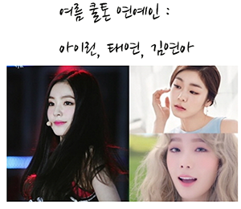

Toggle navigation
Tonymony
최종 톤-타입(퍼스널 컬러) : 여름쿨톤 타입
측정된 피부색

여름 계열의 화이트와 블루 색상 혹은 파스텔 계열 색상이 어울립니다.
그리고 그레이 컬러도 어울립니다.
특히 맑은 여름의 pale톤은 본인의 시크한 이미지에 잘 맞습니다.
어울리지 않는 색상은 원색, 탁하고 짙은 색, 카키, 버건디 색상입니다.
화장품 추천 받기